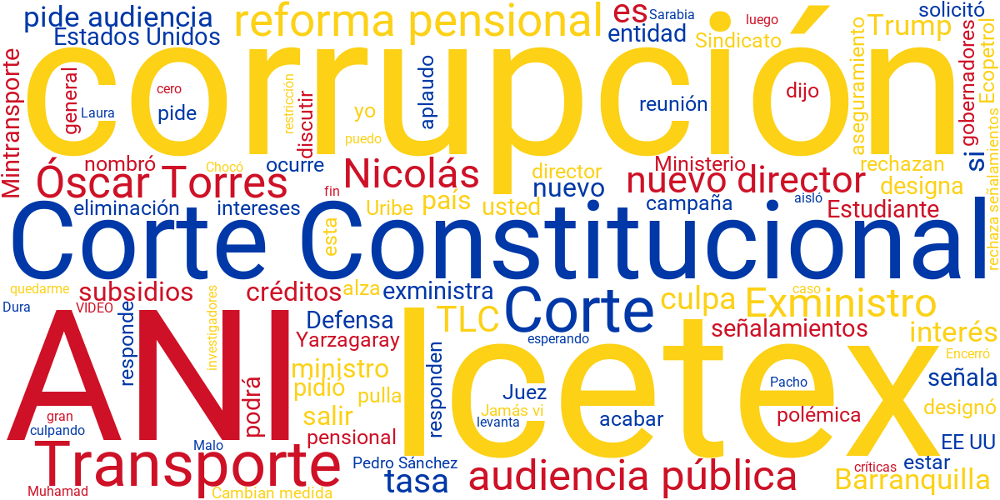
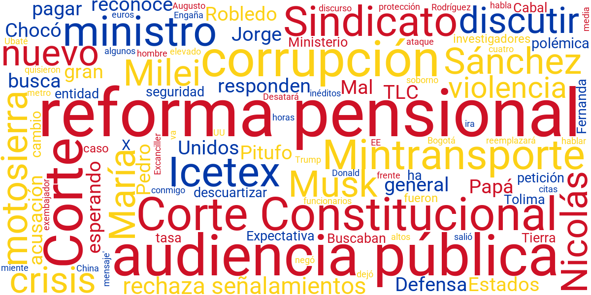
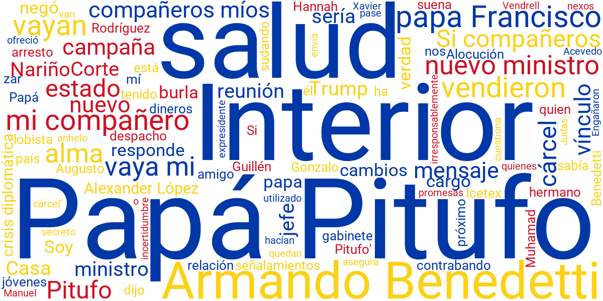
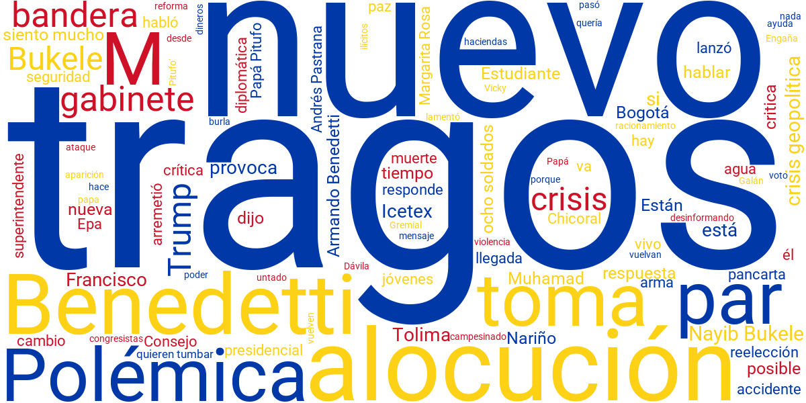
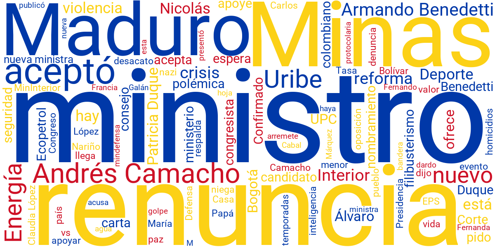
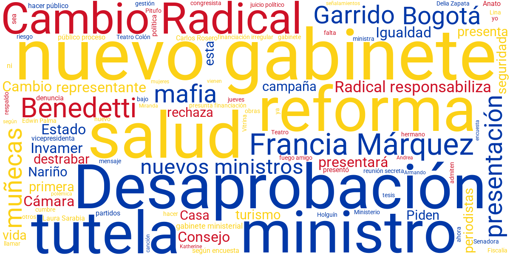
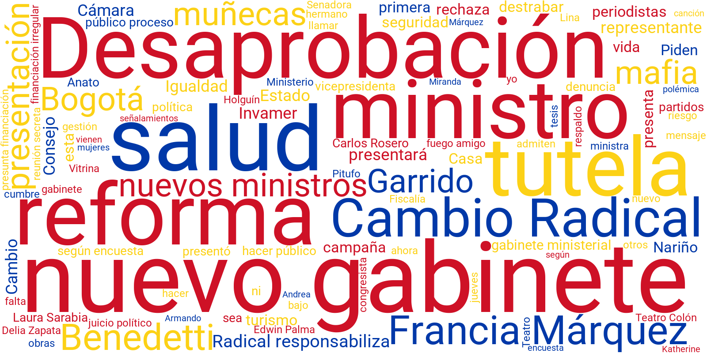

| 21/02/2025 |
El tema central del día fue la tensión entre el gobierno de Gustavo Petro y la Corte Constitucional, luego de que el alto tribunal rechazara nuevamente su invitación a una reunión, argumentando la necesidad de mantener su independencia y evitar compromisos con el Ejecutivo. Además, se destacaron noticias sobre el futuro del Tratado de Libre Comercio con Estados Unidos, con nuevas declaraciones del presidente sobre la posibilidad de revisarlo, lo que generó reacciones inmediatas de sectores económicos y empresariales. Finalmente, hubo un enfoque en los cambios en el Ministerio de Defensa, donde el gobierno confirmó la llegada de un general activo como nuevo ministro, rompiendo con una tradición de más de 30 años en la que el cargo había sido ocupado por civiles. |
 |
| 22/02/2025 |
El tema central del día fue la polémica declaración de Gustavo Petro sobre la motosierra que Javier Milei regaló a Elon Musk, donde el presidente colombiano comparó este gesto con el uso de motosierras en Colombia para descuartizar personas en el conflicto armado, lo que generó fuertes reacciones tanto en Argentina como en sectores políticos colombianos. Además, Petro anunció la firma del Pacto por la Tierra y la Vida en el Tolima, con el objetivo de entregar tierras expropiadas a campesinos, mientras que en materia de seguridad nombró un nuevo jefe de seguridad personal, en medio de preocupaciones por su protección y la de su familia. Finalmente, el mandatario criticó el Tratado de Libre Comercio (TLC) con Estados Unidos, argumentando que ha perjudicado la industria nacional, lo que provocó respuestas inmediatas de gremios empresariales y políticos, quienes advirtieron sobre los riesgos de alterar las relaciones comerciales con el principal socio económico del país. |
 |
| 23/02/2025 |
El tema central del día fue la controversia en torno a la relación de Gustavo Petro con el criminal 'Papá Pitufo', después de que se revelara que el presidente había viajado en un avión vinculado al contrabandista sin conocer su procedencia, lo que desató críticas sobre la seguridad y transparencia del gobierno. Además, se generaron debates en torno a las declaraciones de Petro sobre la crisis política en el país, en las que acusó a ciertos sectores de intentar debilitar su gobierno Finalmente, se discutieron las tensiones entre el Ejecutivo y la rama judicial, con nuevas fricciones entre Petro y la Corte Constitucional, luego de que varios magistrados se negaran a reunirse con él, alegando la necesidad de preservar su independencia. |
 |
| 24/02/2025 |
El tema central del día fue la controversia en torno a la presunta influencia de Gustavo Petro en decisiones judiciales, luego de que varios sectores denunciaran intentos de presión desde el Ejecutivo para incidir en fallos clave, lo que generó un fuerte rechazo en la oposición y advertencias sobre la separación de poderes. Además, se destacaron noticias sobre la continuidad del gobierno en la entrega de tierras a campesinos, con la formalización de nuevos procesos de adjudicación en varias regiones del paÍs, en medio de cuestionamientos sobre la transparencia en la selección de beneficiarios. Finalmente, la opinión pública reaccionó a unas declaraciones informales del presidente en un evento privado, donde hizo comentarios polémicos sobre su relación con líderes políticos, lo que desató una ola de especulaciones sobre posibles alianzas y tensiones internas en su círculo cercano. |
 |
| 25/02/2025 |
El tema central del día fue la polémica por la designación del nuevo ministro de Defensa, luego de que Gustavo Petro confirmara el nombramiento de un alto oficial en servicio activo, lo que generó críticas sobre el impacto de esta decisión en la independencia civil sobre las Fuerzas Armadas. Además, se destacaron noticias sobre la estrategia del gobierno en la lucha contra la delincuencia y el narcotráfico, con el anuncio de nuevas medidas que incluyen una mayor coordinación con autoridades locales y refuerzos en zonas de alta conflictividad. Finalmente, hubo un enfoque en las tensiones dentro del propio Gobierno Petro, con reportes de diferencias entre algunos de sus ministros y cuestionamientos sobre la viabilidad de algunas de sus reformas clave en el Congreso. |
 |
| 26/02/2025 |
El tema central del día fue la creciente presión sobre Gustavo Petro por las tensiones con el Congreso, luego de que varias bancadas expresaran su descontento con las últimas decisiones del Ejecutivo, lo que pone en duda la viabilidad de algunos proyectos clave. Además, se destacaron noticias sobre la respuesta del presidente a las críticas por su estrategia de seguridad, defendiendo su política y señalando que algunos sectores buscan desestabilizar su gobierno. Finalmente, hubo un enfoque en el impacto de las recientes reformas en la economía, con advertencias sobre posibles efectos negativos en la inversión y el crecimiento del país. |
 |
| 27/02/2025 |
El tema central del día fue la controversia en torno a las declaraciones de Gustavo Petro sobre la independencia judicial, luego de que el presidente señalara que algunos jueces están actuando bajo presión de sectores políticos, lo que generó reacciones inmediatas de la rama judicial y la oposición. Además, se destacaron noticias sobre el endurecimiento de las tensiones entre el gobierno y el sector privado, con empresarios advirtiendo sobre los efectos negativos de las recientes políticas económicas en la inversión y el empleo. Finalmente, hubo un enfoque en la creciente incertidumbre sobre el futuro de las reformas gubernamentales, luego de que aliados del Ejecutivo en el Congreso manifestaran dudas sobre la viabilidad de algunos proyectos clave. |
 |